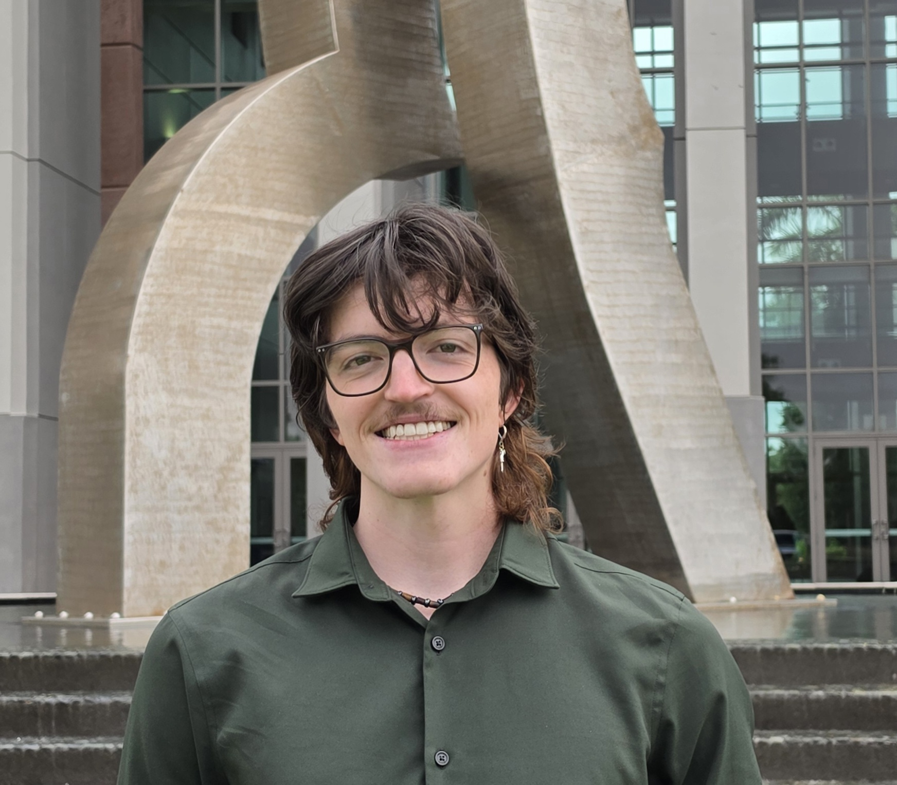

Clinical Psychology · Neuropsychology
After graduating with a dual degree in psychology and sociology, with a concentration in neuroscience and cognition and a minor in biology, in May 2026, I am looking to continue this training. I intend to earn my PhD in Clinical Psychology to become a therapist and a researcher — roles that I believe mutually strengthen one another.
I have gained significant research experience in psychology labs as an undergraduate student, culminating in my development, execution, and defense of an independent honors thesis project regarding perceptions of an experimental treatment under the supervision of Dr. Krystal D. Mize. I have also been involved in research on metacognition and eating disorders, both of which I have presented posters for. At the same time, I served as president of FGCU's psychology club, working with a team of officers to coordinate funding and events focused on professional development.
Currently, I am in the process of gaining more person-to-person psychology experience through clinical shadowing opportunities and a potential position at a local mental health clinic. I am continuing my aforementioned research, focusing especially on expansions to my thesis project, and I am looking forward to further developing my abilities as a researcher and a clinician.

Logan Welch
Currently at
Florida Gulf Coast UniversityHonors College · Dept. of Psychology
What I Study
My research spans biological, psychological, and social considerations for improving pathologies, focusing on bridging gaps among approaches to improve mental health care.
Designed a mixed-methods study examining sensitive clinical attitudes toward an experimental treatment. Developed full IRB submission including informed consent forms, Qualtrics surveys, recruitment materials, and study protocols. Wrote complete research proposal, collected and analyzed data, and successfully defended thesis. Poster accepted at Southeastern Psychological Association 2026 Conference.
Scheduled and facilitated lab sessions; administered assessments and questionnaires; tracked participant progress and maintained data collection and storage protocols. Ran statistical tests and generated visualizations in SPSS. Co-presented findings at SURI 2024 Conference (Ft. Myers, FL).
Assisted with participant recruitment and multi-site data collection; administered surveys; performed quantitative analysis in SPSS. Co-presented at CEPO 2025 Conference (Atlanta, GA).
Led lab team meetings and mentored junior research assistants in protocol adherence, study design, and data analysis.
Scholarly Work
Conference presentations and academic contributions.
2026 · Conference Poster
Southeastern Psychological Association Annual Conference, 2026
2025 · Conference Presentation
CEPO 2025 Conference, Atlanta, GA
2024 · Conference Presentation
SURI 2024 Conference, Ft. Myers, FL
Curriculum Vitae
Education
May 2026
Florida Gulf Coast University — Honors College
Concentration: Neuroscience & Cognition · Minor: Biology · GPA: 3.99
President's Gold 4-Year Scholarship Recipient · President's List
Research Experience
Summer 2025–Present
FGCU, Dr. Krystal D. Mize
Fall 2025
FGCU, Dr. Starlette Sinclair
Spring 2025
FGCU / UWEC — Dr. Sinclair & Dr. Hines
Fall 2024–Present
FGCU, Dr. Starlette Sinclair
Work & Volunteer Experience
2024–2026
Florida Gulf Coast University
2019–Present
Life Care Center of Estero (Long-Term Care Facility)
2023
Community Volunteer
Awards & Honors
2022–2026
Full Tuition Scholarship
2022–2026
$20,000
2024
Florida Gulf Coast University · ~$1,600
Ongoing
Florida Gulf Coast University
Skills & Certifications
Software
Certifications
Get in Touch
I'm always happy to connect with fellow researchers, mentors, and prospective collaborators.
Fort Myers, FL